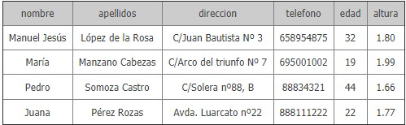
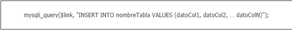
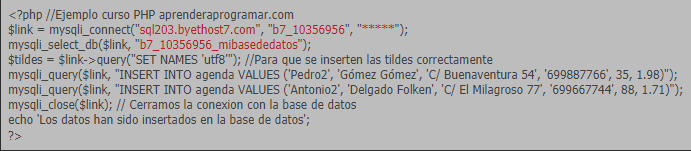
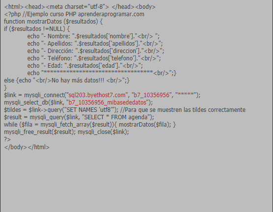
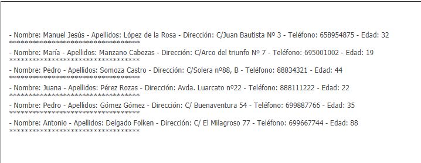

PHP insert into values. Insertar datos (registros, filas) en base de datos MySql. Ejemplos y ejercicio
INSERCIÓN DE DATOS CON PHP Y MySQL. EJEMPLOS Y EJERCICIOS RESUELTOS.
Vamos a explicar cómo insertar registros en nuestra base de datos MySQL a través de código PHP. En concreto, añadiremos registros a la tabla agenda que habíamos creado previamente con phpMyAdmin. Para ello tendremos que realizar lo que se denomina una consulta SQL de inserción (insert into) e ir añadiendo tantos registros con sus correspondientes valores para los campos como deseemos.
Partiremos de nuestra base de datos donde tenemos una tabla denominada agenda con los siguientes datos:

Para realizar la inserción de datos vamos a utilizar una sintaxis de este tipo:

fDonde mysqli_query indica que vamos a realizar una operación (en general se denominan consultas, aunque en este caso la operación sea una inserción de datos), $link es el identificador de conexión que hayamos obtenido con mysqli_connect, nombreTabla es el nombre de la tabla en la cual vamos a realizar la inserción de datos y datoCol1, datoCol2, …, datoColN representa los datos que vamos a insertar en la tabla. Tener en cuenta que debemos indicar los datos en el mismo orden en que se encuentran las columnas en la tabla. Por ejemplo para nuestra tabla agenda tendremos que seguir el orden: nombre, apellidos, direccion, telefono, edad, altura (orden de las columnas).
EJEMPLO DE INSERCIÓN DE DATOS EN UNA TABLA
Escribe este código en un editor y guárdalo en un archivo con un nombre como ejemplo1.php. Luego ejecuta el código (una sola vez, ten en cuenta que si lo ejecutas varias veces insertarás varias veces repetidamente los datos en la base de datos). Recuerda también que debes cambiar y poner tus propios valores en las funciones mysqli_connect y mysqli_select_db.

Nota: si usáramos sintaxis no mysqli se usaría mysql_query ("INSERT INTO nombreDeLaTabla VALUES (datoCol1, datoCol2, … datoColN ", $link).
Tenemos que tener cuidado de poner los valores en el insert en el orden en el que aparecen en la base de datos cuando creamos la tabla. Es decir, el primer valor será para la primera columna (en nuestro ejemplo tipo varchar y corresponderá con el nombre), el segundo será para la segunda columna (en nuestro ejemplo tipo varchar y se corresponderá con los apellidos), etc. También tendremos que prestar atención para que los tipos de datos insertados se correspondan con los de la tabla. Por ejemplo, no debemos insertar un valor numérico decimal si se espera un entero.
Ahora vamos a ejecutar el código de la entrega anterior del curso para ver los nuevos registros añadidos por pantalla. Escribe este código en un editor y guárdalo en un archivo con un nombre como ejemplo2.php. Recuerda que debes cambiar y poner tus propios valores en las funciones mysqli_connect y mysqli_select_db.

El resultado esperado es que se muestren por pantalla todos los resultados de la consulta:

Hemos visualizado el contenido de la base de datos usando una consulta y mostrando los resultados por pantalla. Ten en cuenta que también puedes ver el contenido de la base de datos accediendo directamente a ella. Accede al panel de administración de tu servidor, luego a phpMyAdmin y comprueba cómo los nuevos valores insertados se encuentran en la tabla de la base de datos.
Nota: los nuevos datos añadidos pueden aparecer al final o al principio de la tabla. Si quisiéramos ver los datos con un determinado orden tendríamos que incluir las instrucciones oportunas, pero no vamos a hablar de ello en este momento.
Vamos a resumir lo que hemos hecho: por un lado hemos accedido a la base de datos mediante código PHP y hemos insertado dos nuevas filas (al ejecutar ejemplo1.php) en la tabla agenda. Por otro lado visualizamos el contenido de la tabla agenda (ejemplo2.php) realizando una consulta a la base de datos y comprobamos que aparecen los dos nuevos registros añadidos, correspondientes a “Pedro Gómez Gómez” y “Antonio Delgado Folken”.
Las operaciones de inserción en bases de datos son muy frecuentes en programación web. Ten en cuenta por ejemplo que cada vez que se registra un usuario en una página web hay que guardar la información del usuario (nombre, correo electrónico, etc.). Igualmente cada vez que se produce una compra mediante comercio electrónico hay que almacenar la información de la compra en la base de datos. Es por tanto una operación básica y de gran interés dentro de la programación con bases de datos.
REF. BIBLIOGRAFICA:
aprender a programar.com (2016). Leer y escribir archivos de texto con PHP. Función fopen (modo), fgets, fputs, fclose y feof. Ejemplo (CU00836B) [Figura]. Recuperado de https://www.aprenderaprogramar.com/index.php?option=com_content&view=article&id=585:leer-y-escribir-archivos-de-texto-con-php-funcion-fopen-modo-fgets-fputs-fclose-y-feof-ejemplo-cu00836b&catid=70&Itemid=193